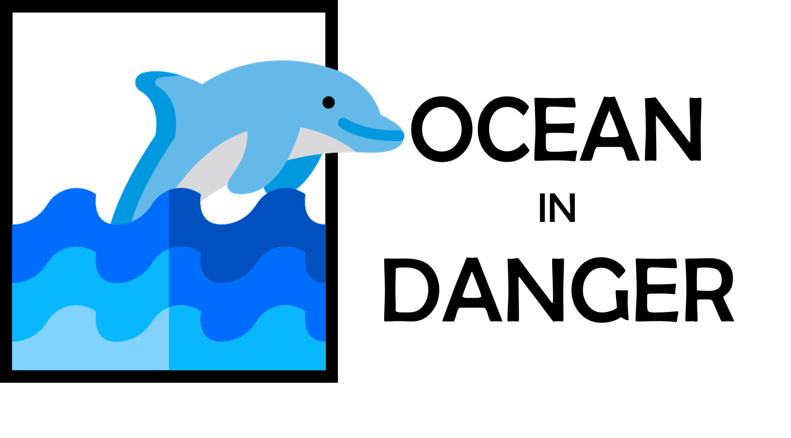

<div class="container col-xs-12 col-sm-6 col-md-8">
    
    <div>
         <h1 class="text-uppercase title-cat solid-var"> Sobre Nosotros</h1>
         <hr class="bg">
            <div class="text-start">
                <p> <strong>
                    <em class="text-uppercase fst-italic fw-bold">OCEAN IN DANGER</em>
                </strong> es una enciclopedia digital sobre las especies
                marinas que se encuentran en peligro de extinción, dirigido a toda la audencia en general.</p>
                <p>
                    Esta enciclopedia nace con el objetivo de difundir cuestiones relacionadas con estas especies, 
                    como una descripción de estos, la ubicación en la que se encuentran, etc., así como también noticias sobre el tema.
                </p>
                <p>
                    Se considera en peligro de extinción a una especie animal cualquiera, cuando su existencia y reproducción no se puede desarrollar en ninguna parte del mundo. Es decir que ya nunca se podrá volver a ver. Esto es debido generalmente a la terminación de un recurso del cual dependen todas y cada una de las especies, ya sea por acción del hombre, como la caza ilegal o la tala de indiscriminada de árboles, o simplemente por cambios en el ecosistema de la especie que son fruto de hechos fortuitos, como lo es el cambio climático.
                </p>
            </div>
            <div>
                <h2 class="text-uppercase title-cat solid-var">¿Qué es OCEAN IN DANGER?</h2>
                <div class="text-start">
                    <p><strong>
                        <em class="text-uppercase fst-italic fw-bold">OCEAN IN DANGER</em>
                    </strong> es un medio independiente para la difusión de información y conocimiento de todas las cuestiones que estén relacionadas directa o indirectamente con el medio ambiente, más específicamente con la extinción de especies marinas.</p>
                    <p>En <strong>
                        <em class="text-uppercase fst-italic fw-bold">OCEAN IN DANGER</em>
                    </strong> queremos contribuir con un granito de arena compartiendo información recaudada de distintas fuentes, y con esto, dar soporte al cumplimiento de dichos objetivos.</p>
                </div>
            </div>
            
    </div>
   
</div>

